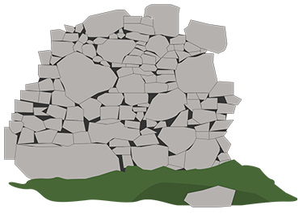

5000BC
Ghar Dalam
Earliest Skorba Remains
5000BC
4500BC
4500BC
4000BC
Farming in Europe
Hypogeum
4000BC
3500BC
Mnajda, Skorba
Hagar Qim, Ggantija
Ta' Hagrat
Far East Temples
3500BC
3000BC
Writing in Mesapotamia and Egypt
South and East Temples
Central Temple
3000BC
2500BC
Stonehenge
Minoan Civilisation
Egyptian Pyramids
Section of South and Central Temples being used as Cremation Cemetery
2500BC
2000BC
2000BC
1500BC

Mycenean civiliation(1400BC)

Borg in-Nadur
1500BC
1000BC
Myceneans, Phoenicians (1200 - 100 BC)
Shang Dynasty China (1600 - 1000 BC)
Bahrija
1000BC
500BC
500BC
0
Tarxien as a field for agriculture
0
500AD
Beginning of Mayan pyramids (200)
500AD